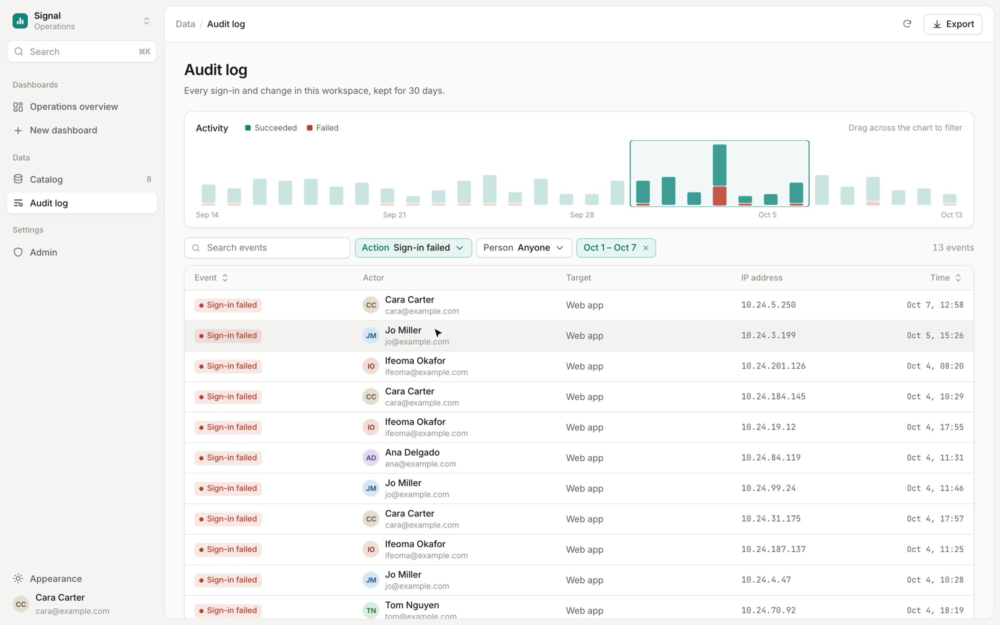
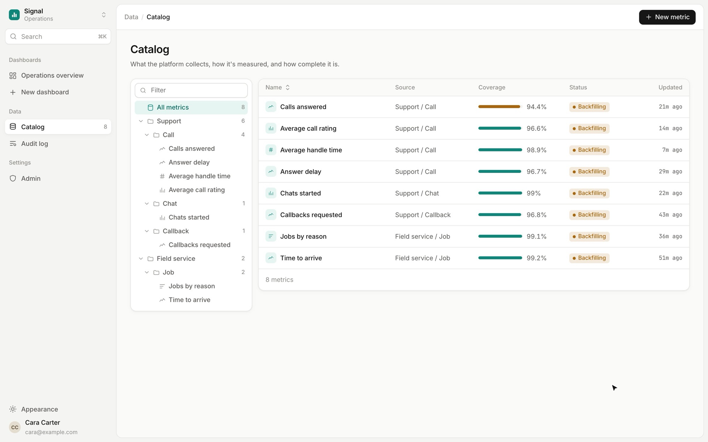
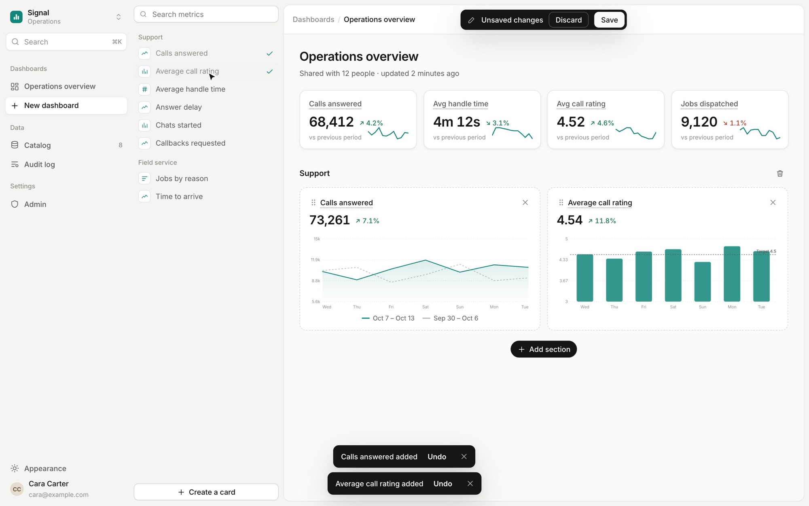
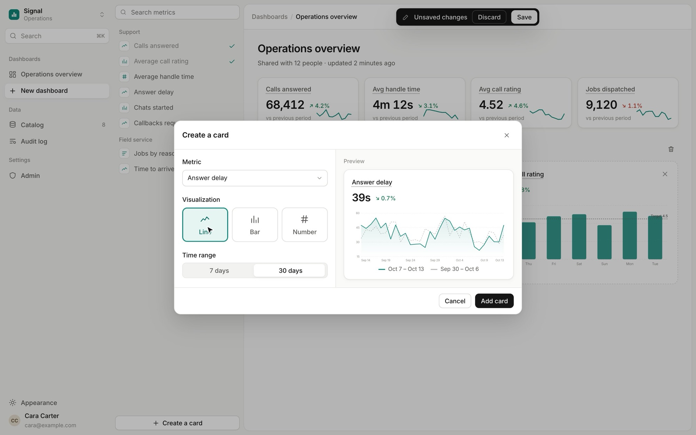
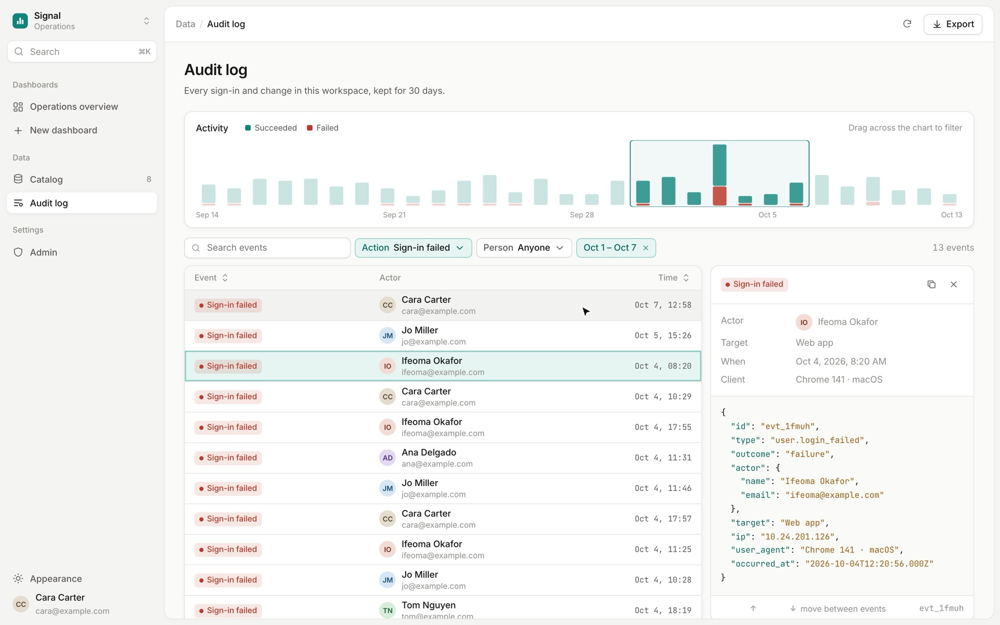
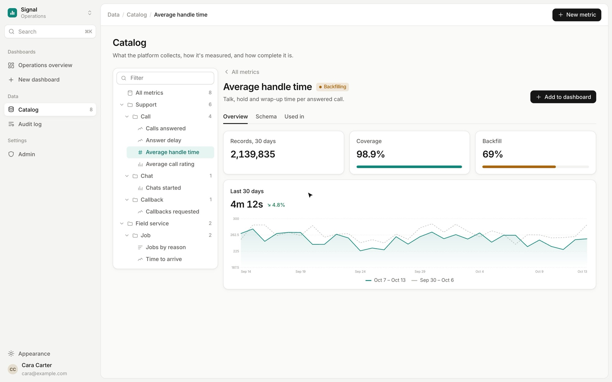

Every new chart was a request.
Leaders needed operational data their own way, without waiting on engineering.
Build it, read it, trust it.


Edit where you look.
The dashboard turns editable in place, with a metric library beside it and undo on every change.
Instead ofFiling a request to the data team

Pick a metric, see the chart.
Metric, visualization and range, with a live preview before it lands.
Instead ofConfiguring a chart blind

The chart is the filter.
Drag across activity to narrow the log. Each event opens beside the list; arrow keys move through them.
Instead ofDate pickers and page loads

Show where the number comes from.
Every metric lists its coverage, backfill and where it is used.
Instead ofNumbers with no source

Small motion, clear cause and effect.
Usage numbers are under NDA. This is my prototype rebuilt with fictional names and data, following current analytics tools.